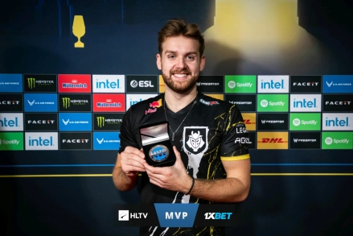
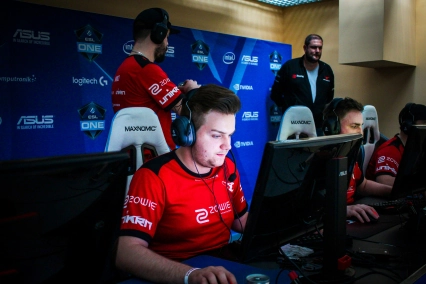
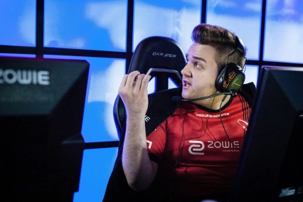
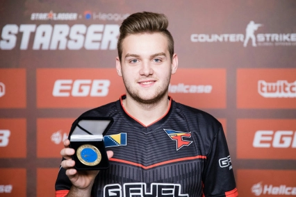
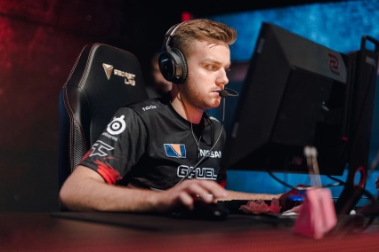
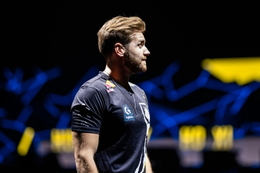
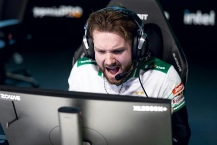
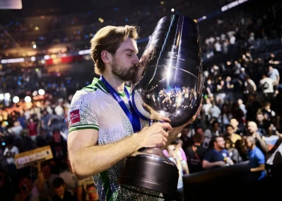
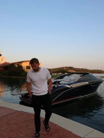
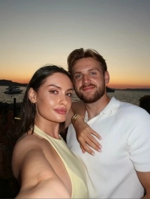

NIKO

1.早年经历
2.职业生涯
3.个人生活
1.早年经历
NiKo1997年出生于巴尔干半岛上的波斯尼亚和黑塞哥维那一个富足的家庭， 很小就接触到了CS这款游戏。 9岁的时候，他在父亲开设的网吧里展现出了极高的FPS游戏天赋。 2010年，13岁的NiKo就已踏足CS职业圈，虽然初出茅庐只能在次级联赛里挣扎。 在CS:GO还没有出现的年代里，14岁的NiKo已经可以凭借极致的瞄准和反应，在一众大人中获得CS1.6的胜利。
2.职业生涯
2010年开始，NiKo就在巴尔干半岛地区的CS比赛中寻找自己的前进之路，他参加了在波斯尼亚和塞尔维亚举行的一系列赛事，并在接下来的两年里分别代表eu4ia和iNation参加了在萨拉热窝举办的Adepto BH Open以及DreamHack公开赛布加勒斯特站。这两个赛事中他的队伍都败给了fnatic没能进入四分之一决赛。
2013年NiKo正式转型CS:GO，在此之后NiKo辗转于各种赛事之间，虽然仍没获得什么好成绩，但他的个人能力得以成功展示。
2015年4月，NiKo正式加入mousesports战队（以下简称MOUZ战队）。
同年5月，在杜伊斯堡ESL春季冠军赛MOUZ战队取得冠军。
同年11月，在CEVO联赛第8赛季线下总决赛上MOUZ战队以0-3败于VP战队（Virtus.pro战队）止步亚军。
2016年3月，在MLG哥伦布Major大赛小组赛上MOUZ战队以1-2败于NIP战队遭到淘汰。
同年7月，在ESL One科隆2016小组赛上MOUZ战队以1-2败于Liquid战队（Team Liquid战队简称）遭到淘汰。
随后在E联赛第一赛季上MOUZ战队止步四强。
同年9月，在Gfinity CS:GO邀请赛决赛上MOUZ战队不敌Envy战队止步亚军。
同年10月，在ESL 职业联赛第四赛季总决赛半决赛上MOUZ战队以1-2败于C9战队止步四强。
同年12月，在ELEAGUE 联赛第二赛季淘汰赛上MOUZ战队以0-2败于Optic战队止步八强。


2017年2月，NiKo转入Faze clan战队（以下简称FaZe战队）。
同年3月，在IEM卡托维兹站决赛上Faze战队以1-3败于Astralis战队止步亚军。
同年4月，在SL i-League 群星联赛S3总决赛上Faze战队以2-1战胜Astralis战队取得冠军。
同年5月，在IEM悉尼站决赛上Faze战队以3-1战胜SK战队取得冠军。
同年6月，在ECS第三赛季线下总决赛上Faze战队以1-2败于SK战队止步亚军。
同年7月，在ESLOne科隆站半决赛上Faze战队以0-2败于SK战队止步四强。
同年9月，在ESL One 纽约站决赛上Faze战队以3-1战胜Liquid战队取得冠军。
同年10月，在ELEAGUE 超级联赛决赛上FaZe战队以2-0击败Astralis战队夺得冠军。
同年11月，在IEM奥克兰站决赛上FAZE战队以2-3败于NIP战队止步亚军。
同年12月，在ESL职业联赛S6总决赛上Faze战队以1-3败于SK战队止步亚军。
接下来在ECS第四赛季总决赛上Faze战队以2-1战胜MOUZ战队取得冠军。

2018年1月，在ELEAGUE Major决赛上Faze战队以1-2败于C9战队止步亚军。
同年2月，在SL-i 群星联赛S4半决赛上Faze战队以1-2败于NAVI战队（Natus Vincere战队简称）止步四强。
同年3月，在IEM卡托维兹站决赛上Faze战队以2-3败于FNC战队止步亚军
随后在V4未来游戏节半决赛上Faze战队以0-2败于VP战队止步四强。
同年5月，在IEM悉尼站决赛上FaZe战队以3-0击败Astralis战队夺得冠军。
随后在ESL职业联赛S7半决赛上Faze战队以0-2败于Astral战队止步四强。
同年6月，在ESLOne 贝洛奥里藏特站决赛上FaZe战队以3-2击败MOUZ战队夺得冠军
同年7月，在ESL One科隆站半决赛上Faze战队以1-2败于BIG战队止步四强。
同年10月，在震中杯决赛上FaZe战队以2-0击败NAVI战队夺得冠军。
2019年1月，在ELEAGUE CS:GO 邀请赛决赛上FaZe战队以2-1击败C9战队夺得冠军。
同年2月，在IEM卡托维兹Major淘汰赛首轮Faze战队以0-2败于NAVI战队止步八强。
同年4月，在BLAST迈阿密站决赛上Faze战队以2-0战胜Liquid战队取得冠军。
同年6月，在DH大师赛达拉斯站半决赛上Faze战队以0-2败于ENCE战队止步四强。
同年7月，在BLAST洛杉矶站决赛上Faze战队以0-2败于Liquid战队止步亚军。
同年11月，在BLAST哥本哈根站决赛上Faze战队以2-0战胜NIP战队取得冠军。
随后在IEM北京站半决赛上Faze战队以0-2败于Astralis战队止步四强。
同年12月，在2019BLAST全球总决赛上Faze战队在败者组首轮以1-2败于Liquid战队战队止步殿军。
2020年3月，在IEM卡托维兹小组赛上Faze战队以1-2败于NAVI战队未能晋级淘汰赛。
同年5月，在ESL One: 里约之路欧洲赛区败者组决赛上Faze战队以0-2败于G2战队止步季军。
同年6月，在2020 DreamHack 春季大师赛欧洲赛区败者组决赛上Faze战队以1-2败于BIG战队止步季军。
同年10月，在IEM纽约站欧洲赛区决赛上Faze战队以3-0战胜OG战队取得冠军。
随后，Niko转会加入G2 Esports俱乐旗下CSGO分部G2战队。
同年11月，在IEM北京海淀站欧洲区半决赛上G2战队以1-2败于NAVI战队止步四强。

2021年2月，在IEM卡托维兹小组赛上G2战队以0-2败于Astralis战队止步八强。
同年4月，在EPL S13赛季淘汰赛上G2战队以1-2败于Liquid战队止步八强。
同年5月，在Dreamhack 2021春季大师赛半决赛上G2战队败于Gambit战队止步四强。
随后在Flashpoint 3欧洲区赛事中G2战队取得季军。
同年6月，在BLAST Premier 2021 春季赛败者组决赛上G2战队以1-2败于NAVI战队止步季军。
同年7月，在IEM科隆站决赛上G2战队以0-3败于NAVI战队止步亚军。
同年11月，在斯德哥尔摩Major决赛上G2战队以0-2不敌NAVI战队止步亚军。
同年12月，在IEM冬季赛半决赛上G2战队以1-2败于NIP战队止步四强。
2022年2月，在IEM卡托维兹站决赛上G2战队以0-3败于Faze战队止步亚军。
同年6月，在IEM达拉斯站淘汰赛首轮G2战队以1-2败于FURIA战队（FURIA Esports战队简称）止步六强。
随后在BLAST Premier 2022春季赛半决赛上G2战队以1-2败于NAVI战队止步四强。
同年10月，在EPL S16赛季半决赛上G2战队以0-2败于NAVI战队止步四强。
同年12月，在BLAST Premier全球总决赛决赛上G2战队以2-1战队Liquid战队取得冠军。
2023年2月，在IEM卡托维兹决赛上G2战队以3-1战胜Heroic战队取得冠军。
同年6月，在IEM达拉斯站淘汰赛上G2战队以1-2败于Faze战队遭到淘汰。
随后在BLAST Premier 2022春季赛半决赛上G2战队以1-2败于Vitality战队（Team Vitality简称）止步四强。
同年8月，在IEM科隆站决赛上G2战队以3-1战胜ENCE战队取得冠军，凭借着超高水平的发挥和决赛中精彩至极的表现，NiKo获得MVP奖章。
随后在Gamers8 2023半决赛上G2战队败于Vitality战队止步四强。
同年9月，在EPL S18赛季淘汰赛首轮G2战队以1-2败于MOUZ战队止步八强。
同年10月，在IEM悉尼站半决赛上G2战队以1-2不敌COL战队止步四强。
同年12月，在BLAST Premier全球总决赛淘汰赛首轮G2战队以1-2败于NAVI战队止步六强。

2024年2月，在IEM卡托维兹站淘汰赛上G2战队以0-2不敌Faze战队止步六强。
同年3月，在PGL哥本哈根Major半决赛上G2战队以1-2败于NAVI战队止步四强。
同年4月，在IEM成都站半决赛上G2战队以1-2败于MOUZ战队止步四强。
同年6月，在IEM达拉斯站决赛上G2战队以2-1战胜Vitality战队取得冠军。
同年7月，在2024年沙特电竞世界杯CSGO项目决赛上G2战队以1-2败于NAVI战队止步亚军。
同年9月，在EPL S20赛季半决赛上G2战队以1-2败于NAVI战队止步四强。
随后在BLAST秋季总决赛上G2战队以3-1战胜NAVI战队取得冠军。
同年11月，在BLAST世界总决赛决赛上G2战队以3-0战胜Spirit战队（Team Spirit简称）取得冠军。
同年12月，在2024反恐精英世界锦标赛半决赛上G2战队以0-2败于Faze战队止步四强。
2025年1月，Niko离开G2电子竞技俱乐部，加入Team Falcons（以下简称Falcons战队）。
同年2月，在PGL克卢日-纳波卡站决赛上Falcons战队以1-3败于MOUZ战队止步亚军。
同年4月，在PGL布加勒斯特决赛上战队以Falcons战队3-0战队G2战队取得冠军。
随后在IEM墨尔本站决赛上Falcons战队以2-3败于Vitality战队止步亚军。
同年5月，在BLAST 巅峰赛S1总决赛上Falcons战队以2-3败于Vitality战队止步亚军。
随后在IEM达拉斯站半决赛上Falcons战队以1-2败于Vitality战队止步四强。
同年8月，在2025电竞世界杯CSGO项目季军赛上以Falcons战队2-1战队Vitality战队取得季军。
同年10月，在EPL S22赛季决赛上Falcons战队以0-3败于Vitality战队止步亚军。
同年11月，在IEM成都站季军赛上Falcons战队以2-1击败MOUZ战队取得季军。
随后在BLAST对抗赛 S2赛季总决赛上Falcons战队以1-3败于FURIA战队止步亚军。
同年12月，在布达佩斯Major淘汰赛首轮Falcons战队以0-2败于Spirit战队止步八强。

2026年1月，在BLAST冬季赏金赛决赛上Falcons战队以0-3败于PV战队（PARIVISION战队简称）止步亚军。
同年2月，在IEM克拉科夫站小组赛上Falcons战队以0-2败于MOUZ战队遭到淘汰。
随后在PGL 克卢日-纳波卡站淘汰赛上Falcons战队以1-2败于PV战队止步八强。
同年3月，在BLAST鹿特丹公开赛淘汰赛上Falcons战队以0-2败于PV战队止步六强。
同年4月，在IEM里约站季军赛上Falcons战队以2-0击败FURIA战队取得季军。
同年5月，在PGL阿斯塔纳决赛上Falcons战队以0-3败于Spirit战队止步亚军。
随后在2026年CS亚洲邀请赛决赛上Falcons战队以1-3败于LEGACY战队止步亚军。
同年6月，在2026年IEM科隆Major总决赛上Falcons战队以3-0击败FURIA战队取得冠军。
2026科隆major冠军

3.个人生活
家庭生活
Niko的父母、姐姐生活在波黑 ，Niko小的时候，他的爸爸经营网吧 ，最开始，Niko父母售卖电影、DVD和CD，后续增加了PS1，随着生意不断做大，Niko父母开始在网吧里增加一些电脑。由于疫情的影响，网吧生意日渐冷清，2024年，NiKo的父母做出了关停网吧的决定 。此外，Niko的父亲是最早发现Niko具备电竞天赋的人
情感生活
2025年，NiKo通过个人社交媒体分享了一组与妻子在意大利度假的照片


兴趣爱好
Niko小时父母试图把他推向运动的方向，让他尝试了包括足球、跆拳道、柔术在内的多项运动，但在那些方面他都没有什么天赋。但有一天他发现了自己喜欢花时间待在电脑后面，CS可以说是他童年所有事情中最热爱的 NiKo喜欢在打完比赛之后去夜店玩，当做比赛之余的娱乐放松方式，因此NiKo有了“夜店小王子”之称
查看更多信息